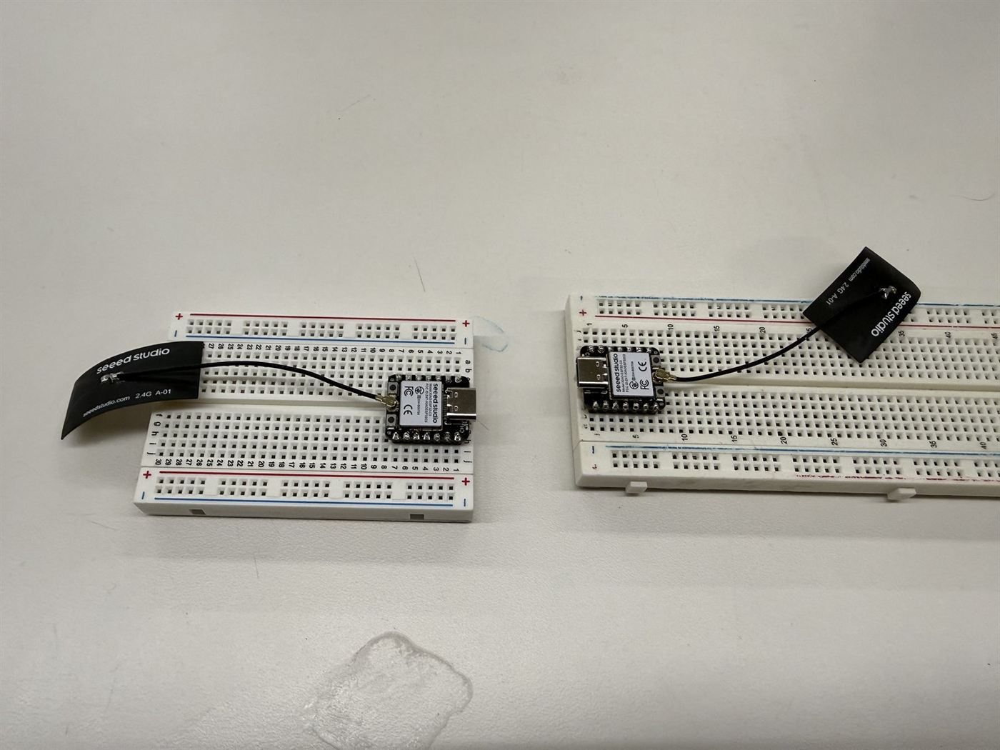

<div class="textcontainer">
<br></br>
<h1>Week 9: Radio, WiFi, Bluetooth (IoT)</h1>
<p class = "margin"></p>
This is the week the comms layer moved from the bench to actual rolling robots. <a href="../04_microcontroller/index.html">Week 4</a> proved one XIAO could broadcast and another could read RSSI off it; <a href="../07_outputs/index.html">Week 7</a> proved a XIAO could drive a motor platform. This week joins those two: two complete robots, each with their own XIAO + antenna + steppers, doing live RSSI-based predator/prey chase against each other.
<p class = "margin"></p>
<h2>Radio hardware</h2>
<p class = "margin"></p>
Each robot carries a <b>Seeed XIAO ESP32-C3</b> wired up on a solderless breadboard with a <b>Seeed 2.4G A-01 external whip antenna</b> plugged into the XIAO's u.FL connector. Originally I'd planned a custom PCB to consolidate everything down, but I ended up sticking with protoboards through the final — easier to iterate, easier to debug, and using the external antenna instead of the onboard PCB antenna gave me noticeably stronger and steadier RSSI readings during range testing.
<p class = "margin"></p>
<p></p>
<p class="caption">Two XIAOs on solderless breadboards with external 2.4 GHz whip antennas — the bench setup for the pre-install range test.</p>
<p class = "margin"></p>
That photo is the bench-side range test before bolting the radios into the robot chassis — confirming the link works between two XIAOs over the room, with the antennas in the orientation they'd live in once installed.
<p class = "margin"></p>
<h2>Predator + prey demo</h2>
<p class = "margin"></p>
<iframe width="315" height="560" src="https://www.youtube.com/embed/LTOPpp896Ok" title="Two robots, RSSI predator + prey chase" frameborder="0" allow="accelerometer; autoplay; clipboard-write; encrypted-media; gyroscope; picture-in-picture; web-share" allowfullscreen></iframe>
<p class = "margin"></p>
Two robots on the floor. One is running <code>mvp_follower.ino</code> (the predator — uses incoming RSSI to chase whatever's broadcasting); the other is running <code>mvp_prey.ino</code> (the same hardware, opposite intent — flees when the predator's RSSI gets too strong). Both robots also broadcast their own ESP-NOW beacon at 5 Hz so each is simultaneously a transmitter and a receiver. The behavior you see in the video is fully autonomous after both are powered on — no driving, no remote control, just radios reacting to each other.
<p class = "margin"></p>
<h2>How the chase actually works</h2>
<p class = "margin"></p>
<h3>The signal: RSSI gradient</h3>
<p class = "margin"></p>
Each ESP-NOW packet arrives stamped with an RSSI value in dBm — stronger when the broadcaster is close, weaker when it's far. On its own that one number doesn't tell a robot which <i>direction</i> to drive in, only how far it currently is. So the chase trick is:
<ol>
<li>Drive somewhere (anywhere) for a second.</li>
<li>Check: did the average RSSI go up or down?</li>
<li>If up → I'm headed the right way, keep going.</li>
<li>If down → I'm headed the wrong way, try a different direction.</li>
</ol>
<p class = "margin"></p>
This is gradient ascent on a signal that has no direction information, only magnitude. The robot recovers a heading by sampling the gradient through motion. The prey runs the exact same loop with the comparison sign flipped — it tries to <i>decrease</i> the RSSI it sees, i.e. get away.
<p class = "margin"></p>
<h3>RSSI smoothing</h3>
<p class = "margin"></p>
Raw per-packet RSSI is too noisy to act on directly (multipath, antenna orientation, a hand passing through the line of sight all swing it 10+ dB). Both sketches keep a rolling 10-sample window and average. At 5 Hz beacons, that's a 2-second sliding average — enough to wash out fast jitter without making the robot feel laggy.
<p class = "margin"></p>
<h3>The decision loop</h3>
<p class = "margin"></p>
Every 1 second the predator looks at the average RSSI and compares to what it was 1 second ago:
<ul>
<li><b>RSSI improved</b> (delta > −2 dBm — a small negative tolerance to handle a slowly-moving target): stay STRAIGHT.</li>
<li><b>RSSI worsened, and we were going straight</b>: start curving — in whichever direction worked last time (<code>lastGoodCurve</code>).</li>
<li><b>RSSI worsened, and we were already curving</b>: commit to that curve direction for a few more decisions before giving up. Single-cycle alternation can't actually accomplish a U-turn — you need to let one curve direction run long enough to change the heading meaningfully before deciding it's wrong.</li>
<li>After <b>3 consecutive bad decisions in the same curve direction</b>: flip to the opposite curve.</li>
</ul>
<p class = "margin"></p>
<h3>Continuous motion (no stop-and-think pauses)</h3>
<p class = "margin"></p>
The robot is always moving. It never stops to think — when it decides the curve direction is wrong, it just smoothly switches to a different curve while still rolling forward. Inner wheel slows by a divisor of 4× rather than stopping. Visually this reads as the robot weaving gently while it homes in, rather than the choppy "drive a bit, stop, turn, drive a bit" you'd get from a discrete-step controller.
<p class = "margin"></p>
To pull this off without losing radio packets, the stepper-driving code is a non-blocking step-pulse generator: every loop iteration, <code>motorsTick()</code> checks whether each motor is due for its next step pulse based on its own period (<code>FAST_PERIOD_US</code> or <code>SLOW_PERIOD_US</code>). The two motors run from independent timers, so one can be at full speed while the other coasts at quarter speed — that's where the smooth curve comes from. ESP-NOW packets continue to arrive and update RSSI during all of this.
<p class = "margin"></p>
<h3>Symmetry breaking</h3>
<p class = "margin"></p>
The final project is a 3-robot triangle (A chases B, B chases C, C chases A). If all three predators are coded to start curving right, they end up rotating outward together and the triangle collapses. To break that, every robot has an <code>INITIAL_CURVE</code> constant that alternates L / R / L around the triangle. The constants live in a clearly-flagged block at the top of <code>mvp_follower.ino</code> — same sketch, same binary, three different curve initializations.
<p class = "margin"></p>
<pre><code class="lang-cpp">// Robot A (MAC 58:8C:81:A0:2F:1C) chases B:
// TARGET_MAC = {0x58, 0x8C, 0x81, 0x9F, 0xBA, 0xA8}
// INITIAL_CURVE = CURVE_LEFT_MODE
//
// Robot B (MAC 58:8C:81:9F:BA:A8) chases C:
// TARGET_MAC = {0x58, 0x8C, 0x81, 0x9D, 0x2A, 0xD4}
// INITIAL_CURVE = CURVE_RIGHT_MODE
//
// Robot C (MAC 58:8C:81:9D:2A:D4) chases A:
// TARGET_MAC = {0x58, 0x8C, 0x81, 0xA0, 0x2F, 0x1C}
// INITIAL_CURVE = CURVE_LEFT_MODE
uint8_t TARGET_MAC[6] = {0x58, 0x8C, 0x81, 0x9F, 0xBA, 0xA8};
DriveMode INITIAL_CURVE = CURVE_LEFT_MODE;
</code></pre>
<p class = "margin"></p>
To keep this week's two-robot demo clean: one robot was running <code>mvp_follower.ino</code> targeting the other's MAC, and the other was running <code>mvp_prey.ino</code> (which doesn't filter by source MAC — it reacts to whatever ESP-NOW beacon it hears, and there's only one beacon in the room).
<p class = "margin"></p>
<h2>Broadcast, not point-to-point</h2>
<p class = "margin"></p>
A subtle but important choice: both robots send their beacons to the broadcast address (<code>FF:FF:FF:FF:FF:FF</code>) rather than to a specific peer MAC. That means:
<ul>
<li>Adding a new robot doesn't require updating every other robot's peer list.</li>
<li>Anyone listening on the same WiFi channel hears every beacon, so each robot has full visibility into all the others.</li>
<li>The "who do I chase" decision is made <i>on the receive side</i> by filtering on <code>info->src_addr == TARGET_MAC</code>. That filter is what turns "I hear everyone" into "I chase only my specific target."</li>
</ul>
<p class = "margin"></p>
This scales cleanly to the 3-robot triangle without me having to register each robot as a peer of every other.
<p class = "margin"></p>
<h2>Hysteresis bands</h2>
<p class = "margin"></p>
The follower uses different thresholds from the prey (and both are different from the simple chaser in Week 4):
<ul>
<li><b>Follower</b>: stays active as long as any signal is above −85 dBm. The "always close enough" cutoff isn't really a band here — once we're driving, we're driving — the gradient ascent itself decides motion.</li>
<li><b>Prey</b>: flees when predator RSSI > −38 dBm (predator is close), stops fleeing when predator RSSI < −48 dBm (predator is far). 10 dB deadband. Hysteresis here prevents the prey from twitching on/off the instant the predator hovers at the threshold.</li>
</ul>
<p class = "margin"></p>
<h2>Source files</h2>
<p class = "margin"></p>
<a href="mvp_follower.ino" download>mvp_follower.ino</a> — the predator, also the canonical "robot" sketch for the final project. Each of the three triangle robots runs this same file with <code>TARGET_MAC</code> and <code>INITIAL_CURVE</code> swapped.
<p class = "margin"></p>
<a href="mvp_prey.ino" download>mvp_prey.ino</a> — the prey from this week's two-robot demo. Same hardware as the follower; same motor primitives; the decision loop is the follower's logic with the gradient-ascent comparison flipped to gradient descent.
<p class = "margin"></p>
<div class="week-nav">
<a href="../08_cnc/index.html" class="week-nav-prev">
<span class="week-nav-label">← Previous</span>
<span class="week-nav-title">Week 8 — CNC</span>
</a>
<a href="../10_machine/index.html" class="week-nav-next">
<span class="week-nav-label">Next →</span>
<span class="week-nav-title">Week 10 — Machine Building</span>
</a>
</div>
</div>